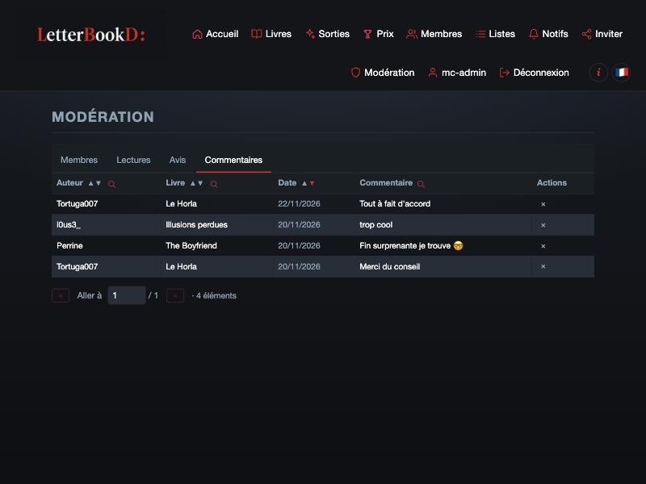

Modération — Commentaires Réservé aux administrateurs
À quoi ça sert : Modérer les discussions imbriquées sous les avis. Un commentaire déplacé est retiré ici, de façon chirurgicale, sans affecter l'avis parent ni les autres réponses du fil.

Parcours
Tableau : Auteur (pseudo du commentateur), Livre (livre dont l'avis porte le commentaire), Date, Commentaire (extrait, triable/filtrable), Actions (croix pour supprimer). La suppression d'un commentaire est atomique : les autres commentaires du même fil sont conservés.
Chaînes d'action
Chaque ligne décrit un déclencheur dans l'interface, ce qu'il ouvre (modal ou formulaire), et l'effet produit.
| Déclencheur | Modal / Champs | Effet |
|---|---|---|
| Icônes tri/filtre (loupe sur la colonne Commentaire) | — | Même mécanique. |
| Bouton croix (×) sur une ligne | Formulaire POST confirmatif. | Supprime le commentaire. Le fil reste cohérent (pas de cascade), et l'avis parent n'est pas affecté. |
Filtre
Le filtre fonctionne de la même façon que dans l'onglet Membres : voir la figure de la page Modération — Membres.